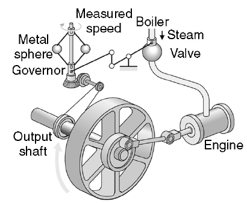
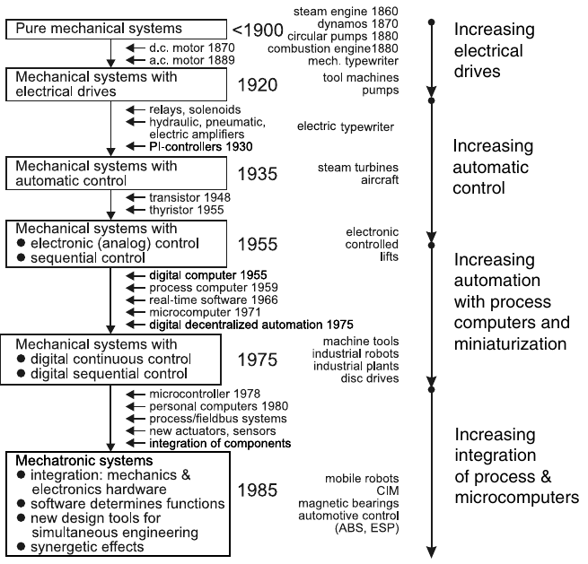
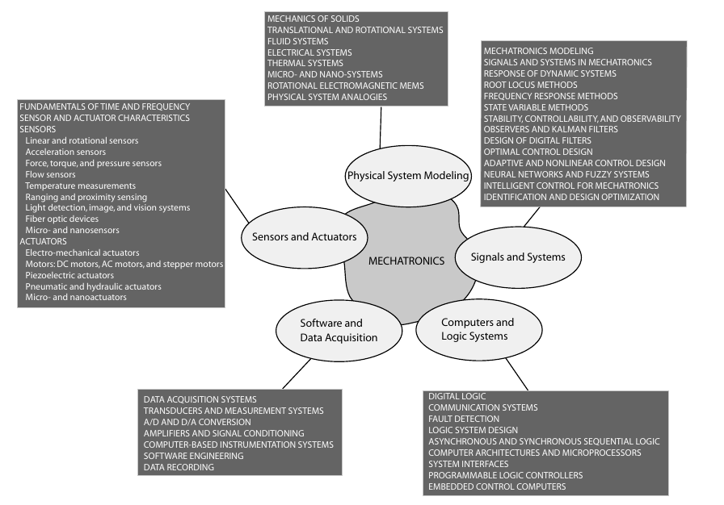

<!DOCTYPE html>
<html lang="en">
  <head>
    <meta charset="utf-8" />
    <meta name="viewport" content="width=device-width, initial-scale=1.0, maximum-scale=1.0, user-scalable=no" />

    <title>reveal-md</title>
    <link rel="shortcut icon" href="./favicon.ico" />
    <link rel="stylesheet" href="./dist/reset.css" />
    <link rel="stylesheet" href="./dist/reveal.css" />
    <link rel="stylesheet" href="https://rawgit.com/puzzle/pitc-revealjs-theme/master/theme/puzzle.css" id="theme" />
    <link rel="stylesheet" href="./css/highlight/base16/zenburn.css" />


  </head>
  <body>
    <div class="reveal">
      <div class="slides"><section  data-markdown><script type="text/template"><style>
.reveal section img { background:none; border:none; box-shadow:none; }


#left {
    margin: 10px 0 15px 20px;
    text-align: center;
    float: left;
    z-index:-10;
    width:48%;
    font-size: 0.85em;
    line-height: 1.5;
}
#right {
    margin: 10px 0 15px 0;
    float: right;
    text-align: center;
    z-index:-10;
    width:48%;
    font-size: 0.85em;
    line-height: 1.5;
}

</style>


# Unidad 1: Introducción a la Mecatrónica


<span style="font-size: 20.0pt; "> **Profesor:** Ing. Israel Chaves Arbaiza </span>

<span style="font-size: 20.0pt;"> **Curso**: Mecatrónica  </span>


</script></section><section  data-markdown><script type="text/template">## Agenda

<span style="font-size: 22.0pt; ">

* Definiciones importantes

* Historia

* Elementos clave

* Fundamentos de los sensores y actuadores

* Mecatrónica en la sociedad: aplicaciones


</span>

</script></section><section ><section data-markdown><script type="text/template">## ¿Qué es Mecatrónica?


</script></section><section data-markdown><script type="text/template">## Definiciones

<span style="font-size: 20.0pt; ">

* *Según Yasakawa Electric Company;* **meca** proviene de mecanismo, y **trónica** viene de electrónica. Es decir, mecatrónica es la tecnología que incorpora más y más electrónica en los mecanismos, de forma íntima y orgánica

* Otros dicen que *Mecatrónica es la aplicación de toma decisiones complejas en la operación de sistemas físicos*

* Actualmente, se sugiere que: *Un sistema mecatrónico no sólo es una unión de lo eléctrico con lo mecánico, y es más que un sistema de control, es una integración completa de todos ellos*

* Formalmente, se considera que un sistema ó elemento mecatrónico, debe tener un componente mecánico, otro electrónico, y uno de computación (ó bien de control)

</span>

</script></section><section data-markdown><script type="text/template">## ¿Qué es y qué no es un sistema mecatrónico?
<span style="font-size: 20.0pt; ">

* Sistemas de cierre/apertura de puertas de garaje
* Vending Machines
* Puerta deslizante
* PLC
* Refrigeradora
* Aire acondicionado
</span>
</script></section></section><section ><section data-markdown><script type="text/template">
## Historia

<span style="font-size: 18.0pt; ">

* Desde la antigüa Grecia (entre el 300 y el 1 A.C.), se buscaba automatizar sistemas mecánicos, como el reloj de Ktesibios:

* <iframe width="560" height="315" src="https://www.youtube.com/embed/Nf_krPlUWvA" title="YouTube video player" frameborder="0" allow="accelerometer; autoplay; clipboard-write; encrypted-media; gyroscope; picture-in-picture" allowfullscreen></iframe>

* En Europa y Rusia, entre los siglos 17 y 18, se inventaron muchos dispositivos utilizados hoy en la mecatrónica, como el regulador de temperatura ó de presión, de los primeros sistemas con realimentación.

</span>

[//]: # (<iframe width="800" height="500" src="https://www.falstad.com/circuit/circuitjs.html?ctz=CQAgjCAMB0l3BWK0BMBOBAWBYwJQOyRopiQEgDMAbCEgpHQKYC0uAUAE4hq0AcjXuBJQQmIpC4gUkPiAHTZwlKPHwplfPMaaVYEYzVwpmapm1izy1RPYBjHrX0qZc56LCs5MSmAK5ISl5qENkCFRg4MHsqLXdTc3dGTxY5VOgaXEpKSFNAlD5qCkjIaIB3RwtXC0kK6oVdGvYKxoUEpoAXWJdwy3NCCPAQFjRUdEo+TD4EIOogzAgWGBRMNEx1yCL0QJo+Sm1GABMmADMAQwBXABsO9i7qgcrH5OQEHDAFhbAUMzRp4ug1DAfAEBAImE2EIImQOIGO52utwqQncQhQCFotUUbhEjWezWx0l6jSSBPa8Ss6Mx7AA5k8QZVspioLS+tIGe0maJJAAlNltKyUQaGQTc17sGQUckiHB6ETmAD2Fw6AAdldFJZV4jiVIrlWqOih2ArwG5VMQ0OBGCVyHxvkhDKaqMIPJbKOwgA" title="Falstad" frameborder="0" allow="accelerometer; autoplay; clipboard-write; encrypted-media; gyroscope; picture-in-picture" allowfullscreen></iframe>)

[//]: # ()
[//]: # ([Ejemplo]&#40;https://www.falstad.com/circuit/circuitjs.html?ctz=CQAgjCAMB0l3BWK0BMBOBAWBYwJQOyRopiQEgDMAbCEgpHQKYC0uAUAE4hq0AcjXuBJQQmIpC4gUkPiAHTZwlKPHwplfPMaaVYEYzVwpmapm1izy1RPYBjHrX0qZc56LCs5MSmAK5ISl5qENkCFRg4MHsqLXdTc3dGTxY5VOgaXEpKSFNAlD5qCkjIaIB3RwtXC0kK6oVdGvYKxoUEpoAXWJdwy3NCCPAQFjRUdEo+TD4EIOogzAgWGBRMNEx1yCL0QJo+Sm1GABMmADMAQwBXABsO9i7qgcrH5OQEHDAFhbAUMzRp4ug1DAfAEBAImE2EIImQOIGO52utwqQncQhQCFotUUbhEjWezWx0l6jSSBPa8Ss6Mx7AA5k8QZVspioLS+tIGe0maJJAAlNltKyUQaGQTc17sGQUckiHB6ETmAD2Fw6AAdldFJZV4jiVIrlWqOih2ArwG5VMQ0OBGCVyHxvkhDKaqMIPJbKOwgA&#41;)
</script></section><section data-markdown><script type="text/template">
## Historia



<span style="font-size: 15.0pt; ">

* En 1769, el regulador de Watt (ver imagen),potenció el desarrollo de la teoría de control, regulando la velocidad del motor de vapor.
* Luego, entre la época de 1930 y 1960, se hicieron importantes avances en sistemas de medición, motores de corriente alterna, métodos analíticos y matemáticos para describir sistemas, entre otros.
* La Segunda Guerra Mundial, lideró esfuerzos para implementar control automático en sistemas de armas, aviones, comunicaciones y otros.
* Y en el aspecto comercial, el ahorro de costos al implementar la producción automatizada, fue una prioridad, desde 1940.
* Por último, el desarrollo del microprocesador a finales de los 60's, permitió dar control por computadora a los productos y procesos.

</span>
</script></section><section data-markdown><script type="text/template">
## Historia

<span style="font-size: 16.0pt; ">

A finales de los 70's, la **Sociedad Japonesa para la Promoción de Maquinaria Industrial (JSPMI)**, clasificó los productos mecatrónicos en 4 categorías:
1. **Clase 1:** Productos principalmente mecánicos, con electrónica para permitirles funcionar. Ej: máquinas-herramienta controladas numéricamente, y sistemas de velocidad variable.
2. **Clase 2:** Sistemas tradicionalmente mecánicos, con actualizaciones internas que incorporan electrónica, sin alterar lo externo. Como las máquinas de costura modernas, ó los sistemas de manufactura automatizados.
3. **CLase 3:** Cuando se mantiene la función de un sistema tradicionalmente mecánico, pero cambiando lo interno por electrónica. Ej: Un reloj digital.
4. **Clase 4:** Productos diseñados con mecánica y electrónica de forma integrada. Las fotocopiadoras, lavadoras ó secadoras automáticas, son ejemplos de esto.

</span>
</script></section><section data-markdown><script type="text/template">
## Historia

</script></section></section><section ><section data-markdown><script type="text/template">
## Elementos clave



[//]: # (<span style="font-size: 16.0pt; ">)

[//]: # ()
[//]: # (Los osciladores se caracterizan a menudo por la frecuencia de su señal de salida:)

[//]: # (* Un oscilador de baja frecuencia &#40;LFO&#41; es un oscilador electrónico que genera una frecuencia por debajo de ≈ 20Hz. Se utiliza típicamente en el campo de los sintetizadores de)

[//]: # (audio.)

[//]: # (* Un oscilador de audio produce frecuencias en el rango de audio, sobre 16Hz a 20kHz)

[//]: # (* Un oscilador de RF produce señales en la frecuencia de radio &#40;RF&#41; intervalo de aproximadamente 100kHz a 100GHz)

[//]: # ()
[//]: # (**Existen 2 tipos principales:** Oscilador lineal &#40;armónico&#41; ó No lineal &#40;de relajación&#41;)

[//]: # ()
[//]: # (</span>)

[//]: # ()
[//]: # ()
[//]: # (<!-- <div id="left">)

[//]: # ()
[//]: # (<font size=6>)

[//]: # ()
[//]: # (<p style='text-align: justify;'>)

[//]: # ()
[//]: # (**Etapa 1:** Microgrietas, debido a la deformación plástica cíclica)

[//]: # ()
[//]: # (**Etapa 2:** Las microgrietas se convierten en macro. Y se forman mesetas paralelas, separadas por crestas longitudinales.)

[//]: # ()
[//]: # (**Etapa 3:** Ocurre en el ciclo de esfuerzo final, cuando la pieza ya no resiste cargas y falla.)

[//]: # ()
[//]: # (</p>)

[//]: # (</font>)

[//]: # ()
[//]: # (</div>)

[//]: # ()
[//]: # (<div id="right">)

[//]: # ()
[//]: # ()

[//]: # ()
[//]: # (</div> -->)
</script></section><section data-markdown><script type="text/template">
## Elementos clave


</script></section></section><section ><section data-markdown><script type="text/template">
## Fundamentos de los sensores y actuadores


</script></section><section data-markdown><script type="text/template">
## Fundamentos de los sensores y actuadores

<span style="font-size: 16.0pt; ">

* **Sensor** es un dispositivo que al ser expuesto ante un fenómeno físico (temperatura, desplazamiento, fuerza, etc.), produce una señal de salida (eléctrica, mecánica, magnética, lumínica, etc.) proporcional.
* Un **transductor**, es un aparato que convierte una forma de energía en otra.
* Los sensores se pueden clasificar de diferentes formas, si son analógicos ó digitales, pasivos (no requieren energía externa) ó activos (ocupan una fuente de energía para operar)

</span>
</script></section><section data-markdown><script type="text/template">
## Fundamentos de los sensores y actuadores

<span style="font-size: 16.0pt; ">

* Por otro lado, **un actuador**, es el dispositivo que recibe una señal de control (típicamente eléctrica), y produce un cambio físico (fuerza, movimiento, flujo, calor, etc.) en el sistema.

</span>


</script></section><section data-markdown><script type="text/template">
## Fundamentos de los sensores y actuadores

<span style="font-size: 16.0pt; ">

* Los actuadores se pueden clasificar según el tipo de energía que trabajan, principalmente eléctricos, hidráulicos, neumáticos, electromecánicos ó electromagnéticos. Aunque actualmente se tienen actuadores de materiales inteligentes, microactuadores y nanoactuadores.
* También se pueden clasificar en **binarios** ó **continuos**, dependiendo de la cantidad de estados-estables que tenga el actuador como salidas. Un relé es un actuador binario, y un motor es uno continuo.

</span>

</script></section></section><section ><section data-markdown><script type="text/template">
## Mecatrónica en la sociedad: aplicaciones

### RoboCow: Un robot para entrenar caballos

<section>
  <video>
    <source  data-src="images/RoboCow.mp4" type="video/mp4" />
  </video>
</section>

</script></section><section data-markdown><script type="text/template">
## Mecatrónica en la sociedad: aplicaciones

### RoboCow: Un robot para entrenar caballos


</script></section><section data-markdown><script type="text/template">
## Mecatrónica en la sociedad: aplicaciones

<iframe width="900" height="550" src="https://www.youtube.com/embed/dvRkZH2A-yY" title="YouTube video player" frameborder="0" allow="accelerometer; autoplay; clipboard-write; encrypted-media; gyroscope; picture-in-picture" allowfullscreen></iframe>
</script></section><section data-markdown><script type="text/template">

## Mecatrónica en la sociedad: aplicaciones

<iframe width="900" height="550" src="https://www.youtube.com/embed/-U6VTC3QjPI" title="YouTube video player" frameborder="0" allow="accelerometer; autoplay; clipboard-write; encrypted-media; gyroscope; picture-in-picture" allowfullscreen></iframe>
</script></section><section data-markdown><script type="text/template">
## Mecatrónica en la sociedad: aplicaciones

<iframe width="900" height="550" src="https://www.youtube.com/embed/cwCDZaxOkro?start=81" title="YouTube video player" frameborder="0" allow="accelerometer; autoplay; clipboard-write; encrypted-media; gyroscope; picture-in-picture" allowfullscreen></iframe>
</script></section><section data-markdown><script type="text/template">
## Mecatrónica en la sociedad: aplicaciones

<iframe width="900" height="550" src="https://www.youtube.com/embed/fNpBDwYLi-Q?start=43" title="YouTube video player" frameborder="0" allow="accelerometer; autoplay; clipboard-write; encrypted-media; gyroscope; picture-in-picture" allowfullscreen></iframe>
</script></section><section data-markdown><script type="text/template">
## Mecatrónica en la sociedad: aplicaciones

<iframe width="900" height="550" src="https://www.youtube.com/embed/shimvNXyVtw?start=54" title="YouTube video player" frameborder="0" allow="accelerometer; autoplay; clipboard-write; encrypted-media; gyroscope; picture-in-picture" allowfullscreen></iframe>
</script></section></section></div>
    </div>

    <script src="./dist/reveal.js"></script>

    <script src="./plugin/markdown/markdown.js"></script>
    <script src="./plugin/highlight/highlight.js"></script>
    <script src="./plugin/zoom/zoom.js"></script>
    <script src="./plugin/notes/notes.js"></script>
    <script src="./plugin/math/math.js"></script>
    <script>
      function extend() {
        var target = {};
        for (var i = 0; i < arguments.length; i++) {
          var source = arguments[i];
          for (var key in source) {
            if (source.hasOwnProperty(key)) {
              target[key] = source[key];
            }
          }
        }
        return target;
      }

      // default options to init reveal.js
      var defaultOptions = {
        controls: true,
        progress: true,
        history: true,
        center: true,
        transition: 'default', // none/fade/slide/convex/concave/zoom
        slideNumber: true,
        plugins: [
          RevealMarkdown,
          RevealHighlight,
          RevealZoom,
          RevealNotes,
          RevealMath
        ]
      };

      // options from URL query string
      var queryOptions = Reveal().getQueryHash() || {};

      var options = extend(defaultOptions, {"controls":true,"progress":true,"history":true,"center":true,"slideNumber":true}, queryOptions);
    </script>


    <script>
      Reveal.initialize(options);
    </script>
  </body>
</html>
